10 - Outils
-
1Introduction
-
2Parcellaire
-
3Exploitation
-
4Interface et accès
-
5Comptabilité
-
6Achats
-
7Ventes
-
8Stocks, tiers et RH
-
9Production
-
10Outils
-
11Performance
-
12Ekyviti
Dans ce chapitre, on vous explique :
Glossaire du chapitre
Ajout d'un nouveau fond cartographique, personnalisation de factures, récupération de données comptables, mise en place d'une extraction de données ou d'un tableau de bord spécifique, accompagnement pour l'import de données existantes, nous vous proposons des prestations sur mesure. Sous forme de tickets, achetez le temps nécessaire pour vos développements personnalisés. En savoir plus.
Guide de prise en main • Outils • Préparation des fichiers CSV
a - Préparation des fichiers CSV
Lors de l'ouverture des fichiers CSV, veillez à ce que l'encodage sélectionné soit bien défini sur UTF-8 et que le séparateur des colonnes de la feuille de calcul soit la virgule. Prenez également soin de vérifier que le fichier ne comporte pas de caractères spéciaux.
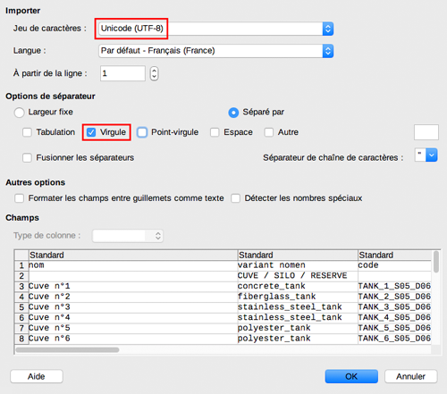
Ouverture d'un fichier CSV avec « LibreOffice »
Guide de prise en main • Outils • Import de données
b - Import de données dans Ekyagri | Ekyviti
Afin de permettre l'utilisation de données externes dans Ekyagri | Ekyviti et d'éviter une double saisie, un moteur d'échange est disponible vous permettant de réaliser des imports spécifiques aux modules ou aux fonctionnalités de l'application. Les procédures suivantes vous expliquent comment importer différents jeux de données propres à votre exploitation.
Guide de prise en main • Imports • Import d'un plan de comptes
1 – Procédure pour importer un plan de comptes
Il est possible d'importer un plan de comptes provenant d'une autre application dans Ekyagri. Cette fonctionnalité nécessite de disposer d'un fichier au format CSV codé en UTF-8 et dont la structure doit strictement respecter les préconisations édictées ci-après.
La structure de ce tableau est basée sur 2 colonnes avec les informations classées selon l'ordre suivant (le symboleindique une donnée obligatoire) :
Numéro de compte
Libellé
Dans un tableur, la feuille de calcul doit ressembler à cet exemple (un extrait du tableau est affiché ici par 3 captures d'écran) :
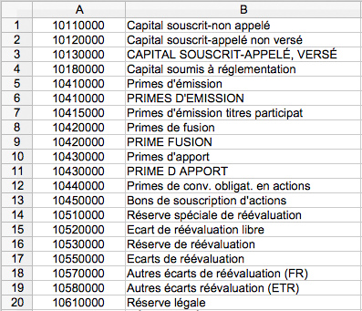
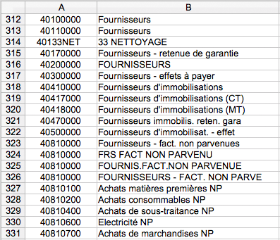
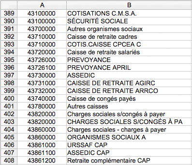
Adaptez les données en votre possession à l'aide d'un tableur comme par exemple Apache OpenOffice ou LibreOffice. Vous pouvez télécharger un modèle en cliquant sur le lien suivant :

Veillez, pour chaque numéro de compte, à la présence nécessaire d'au moins un caractère dans la colonne des libellés pour ne pas obtenir d'erreur lors de l'import.
Une fois votre fichier préparé, il est alors possible de réaliser l'intégration des nouvelles données. Le processus suivant vous guide pour importer un plan de comptes dans l'application :

Cliquez sur le lien "Outils" dans le "Menu principal" ou sur le bouton "Outils" de la page d'accueil :

Dans la barre latérale du module, cliquez sur "Imports" dans la section "Échange" symbolisée par l'icône représentant 2 flèches.

Tous les "Imports" déjà réalisés sont listés ici, notamment ceux issus de l'intégration des données TelePAC, ainsi que les zones cultivables et les bâtiments définis dans l'assistant de démarrage.

Cliquez sur le bouton en haut à gauche de la fenêtre principale.
en haut à gauche de la fenêtre principale.

Puis, dans le pavé "Ekylibre" de la section "Comptabilité", sélectionnez "Plan de comptes - Ekylibre" dans la liste déroulante des types de fichiers.
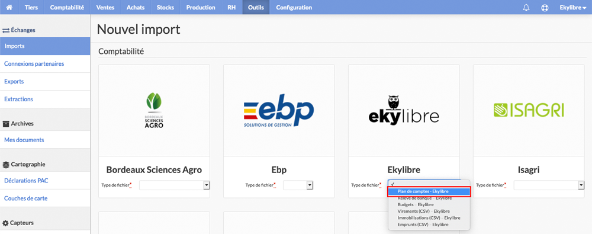

Cliquez sur le bouton "Parcourir" pour sélectionner le fichier CSV du plan de comptes à importer dans l'application.

Cliquez sur Importer pour valider l'opération.
Cliquez sur le bouton Exécuter pour valider l'import du plan de comptes.
En cas d'incompatibilité, l'application vous avertit immédiatement qu'une erreur est survenue.
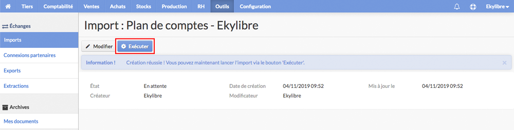

La barre de progression vous informe de l'avancée du transfert des données à traiter.
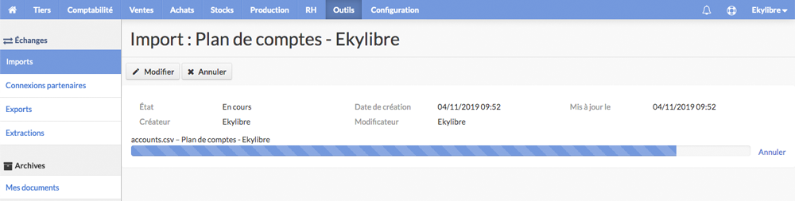

Une fois que la barre d'avancement disparaît, la pastille rougeen haut à droite de la cloche vous indique qu'une opération interne a été effectuée par l'application. Cliquez sur celle-ci pour afficher la notification. En cas d'erreur, vous serez informé(e) de la nature de celle-ci.
vous indique qu'une opération interne a été effectuée par l'application. Cliquez sur celle-ci pour afficher la notification. En cas d'erreur, vous serez informé(e) de la nature de celle-ci.
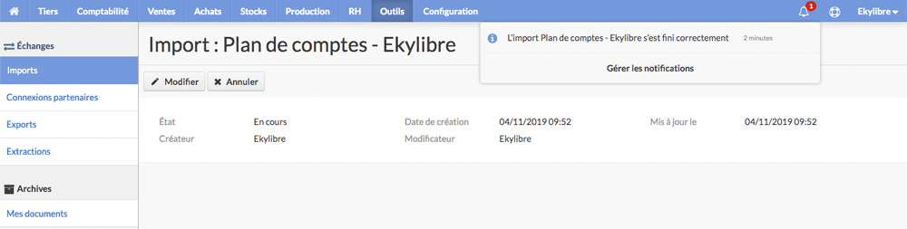
Affichez le contenu des comptes comptables de votre choix pour vérifier l'intégrité des données importées (procédure décrite dans le chapitre 5 - Plan de comptes).
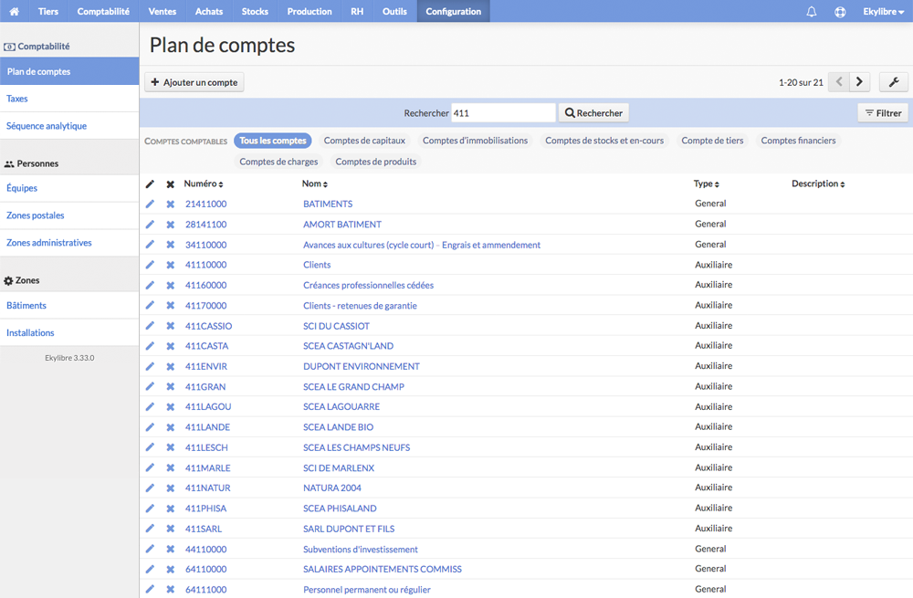
Guide de prise en main • Imports • Import de tiers
2 – Procédure pour importer des tiers dans l'application
Il est possible d'importer des tiers (personnel, fournisseurs, clients) provenant d'un gestionnaire de contacts ou d'une autre application, dans Ekyagri. Cette fonctionnalité nécessite de disposer d'un fichier au format CSV codé en UTF-8 et dont la structure doit strictement respecter les préconisations édictées ci-après.
La structure de ce tableau est basée sur 21 colonnes avec les informations (certaines propres aux entreprises) classées selon l'ordre suivant : (le symboleindique une donnée obligatoire).
Prénom
Nom
Type("person" pour qualifier une personne physique ou "legal_entity" pour qualifier une entreprise)
Radical compte client (si l'entité est un client, complétez la colonne avec votre compte radical client. Exemple : "411" ou "431" pour le compte de charges sociales)
Radical compte fournisseur (si l'entité est un fournisseur, complétez la colonne avec votre compte radical fournisseur. Exemple : "401" ou "431" pour le compte de charges sociales)
Adresse
Code postal
Ville
Téléphone
Fax
Portable
Nature du lien ("management" pour qualifier un responsable ou "work" pour qualifier un salarié)
Raison sociale (si un lien est indiqué, il faut impérativement saisir le nom de l'entité avec laquelle la personne est liée)
Pays("fr" pour le code par défaut)
Adresse email
Actif("1" pour qualifier un tiers actif)
Prospect
Transporteur
No de Siret
No de TVA intracommunautaire
Code APE
Dans un tableur, la feuille de calcul doit ressembler à cet exemple (le tableau est affiché ici par 2 captures d'écran) :
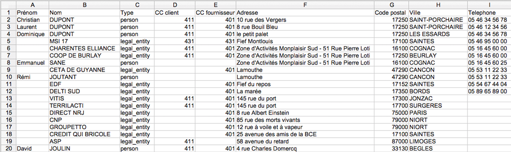
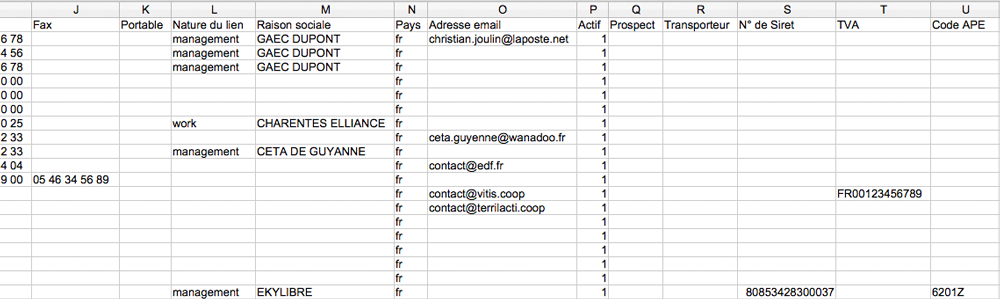
Veillez à ce que l'adresse postale ne comporte aucune virgule qui pourrait être interprétée comme un séparateur et rendrait les données inutilisables ou provoquerait une erreur lors de l'import. D'une manière générale, aucune virgule ne doit figurer dans les informations du tableau. Pour vous en assurer, vous pouvez effectuer une recherche du caractère "," dans le tableur.
Adaptez les données en votre possession à l'aide d'un tableur comme par exemple Apache OpenOffice ou LibreOffice. Il n'est pas nécessaire que tous les éléments soient renseignés dans les colonnes mais il est primordial que l'ordre indiqué soit respecté. Vous pouvez télécharger un modèle en cliquant sur le lien suivant :
Une fois votre fichier préparé, il est alors possible de réaliser l'intégration des nouvelles données. Le processus suivant vous guide pour importer des tiers dans l'application :
Cliquez sur le lien "Outils" dans le "Menu principal" ou sur le bouton "Outils" de la page d'accueil :
Dans la barre latérale du module, cliquez sur "Imports" dans la section "Échange" symbolisée par l'icône représentant 2 flèches.
Tous les "Imports" déjà réalisés sont listés ici, notamment ceux issus de l'intégration des données TelePAC, ainsi que les zones cultivables et les bâtiments définis dans l'assistant de démarrage.
Cliquez sur le boutonen haut à gauche de la fenêtre principale.
Puis, dans le pavé "Ekylibre" de la section "Stocks", sélectionnez "Tiers - Ekylibre" dans la liste déroulante des types de fichiers.
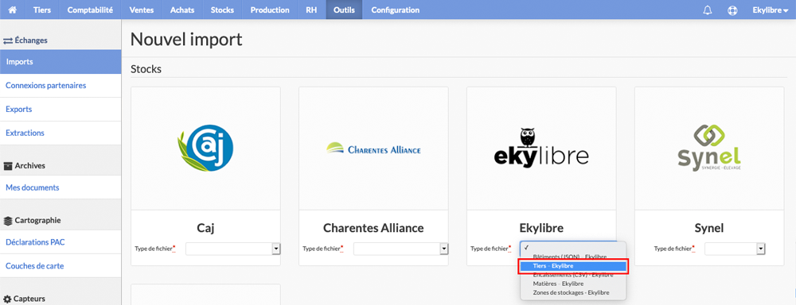
Cliquez sur le bouton "Parcourir" pour sélectionner le fichier CSV des tiers à importer dans l'application.
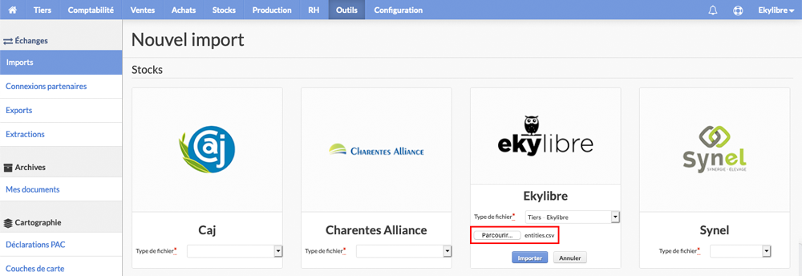
Cliquez sur Importer pour valider l'opération.
Cliquez sur le bouton Exécuter pour valider l'import des tiers.
En cas d'incompatibilité, l'application vous avertit immédiatement qu'une erreur est survenue.
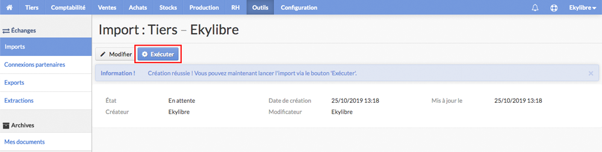
La barre de progression vous informe de l'avancée du transfert des données qui peut prendre plus ou moins de temps en fonction du nombre de tiers à traiter.
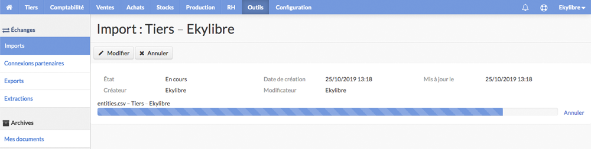
Une fois que la barre d'avancement disparaît, la pastille rougeen haut à droite de la cloche vous indique qu'une opération interne a été effectuée par l'application. Cliquez sur celle-ci pour afficher la notification. En cas d'erreur, vous serez informé(e) de la nature de celle-ci.
vous indique qu'une opération interne a été effectuée par l'application. Cliquez sur celle-ci pour afficher la notification. En cas d'erreur, vous serez informé(e) de la nature de celle-ci.
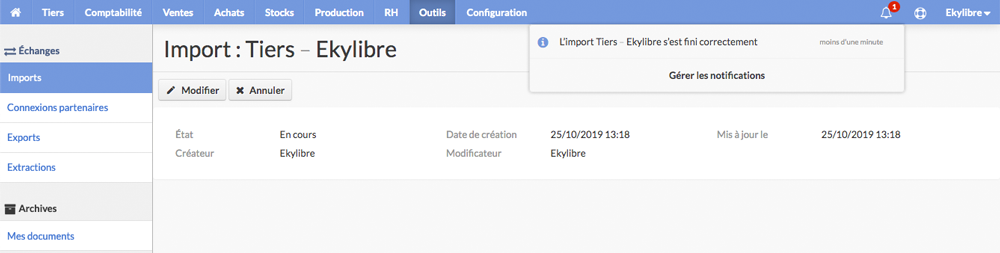
Dans le module "Tiers", affichez la liste des tiers pour vérifier l'intégrité des données importées et procéder à d'éventuelles modifications.
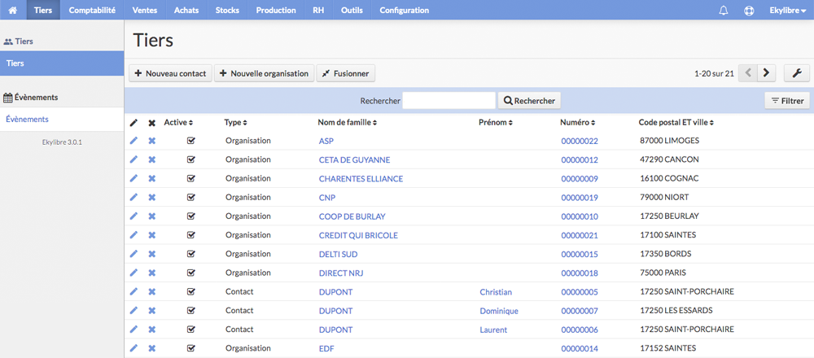
Guide de prise en main • Imports • Import d'articles
3 – Procédure pour importer des articles dans l'application

Il est vivement conseillé de réaliser l'import des articles avant celui des équipements. En effet, on crée le tableau des équipements à importer en fonction de leur type et de ce fait, on les rattache à la nomenclature Ekylibre téléchargeable grâce au lien ci-dessous. Ils seront identifiés avec un numéro de travail. Pour faciliter ce travail, nous vous recommandons de préparer le tableau des équipements en même temps que celui des articles.
Le tableau ci-dessous présente la nomenclature utilisée pour renseigner les équipements avec leur nom et leur identifiant ("variant nomen") :

Glissez pour parcourir le tableau
Il est possible d'importer des articles dans Ekyagri. Cette fonctionnalité nécessite de disposer d'un fichier au format ODS dont la structure doit strictement respecter les préconisations édictées ci-après.
La structure de ce tableau est basée sur 10 colonnes avec les informations classées selon l'ordre suivant (plusieurs feuilles sont autorisées dans un même document et le symboleindique une donnée obligatoire).
Nom(le nom de l'article)
Variant nomen(l'identifiant de l'article selon la nomenclature Ekylibre)
Code variant (un numéro de travail pour identifier l'article)
Variété (optionnel, pour désigner par exemple un produit de récolte)
Dérivé (optionnel, pour désigner l'espèce)
Prix d'achat HT
Prix de vente HT
Unité du prix
Indicateurs complémentaires
France Maaid (Numéro d'AMM du produit phytosanitaire)
Dans un tableur, la feuille de calcul doit ressembler à cet exemple (le tableau est affiché ici par 2 captures d'écran) :
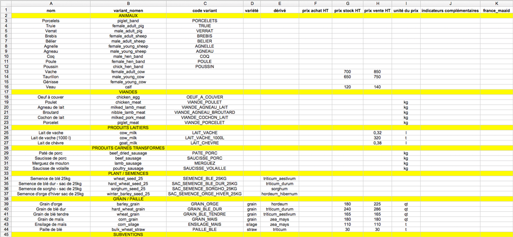
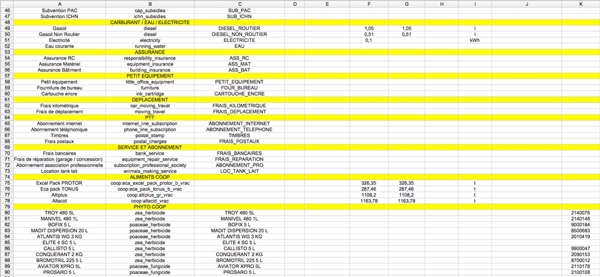
Adaptez les données en votre possession à l'aide d'un tableur comme par exemple Apache OpenOffice ou LibreOffice. Il n'est pas nécessaire que tous les éléments soient renseignés dans les colonnes mais il est primordial que l'ordre indiqué soit respecté. Vous pouvez télécharger un modèle en cliquant sur le lien suivant :
Une fois votre fichier préparé, il est alors possible de réaliser l'intégration des nouvelles données. Le processus suivant vous guide pour importer des articles dans l'application :
Cliquez sur le lien "Outils" dans le "Menu principal" ou sur le bouton "Outils" de la page d'accueil :
Dans la barre latérale du module, cliquez sur "Imports" dans la section "Échange" symbolisée par l'icône représentant 2 flèches.
Tous les "Imports" déjà réalisés sont listés ici, notamment ceux issus de l'intégration des données TelePAC, ainsi que les zones cultivables et les bâtiments définis dans l'assistant de démarrage.
Cliquez sur le boutonen haut à gauche de la fenêtre principale.
Puis, dans le pavé "Ekylibre" de la section "Configuration", sélectionnez "Articles - Ekylibre" dans la liste déroulante des types de fichiers.
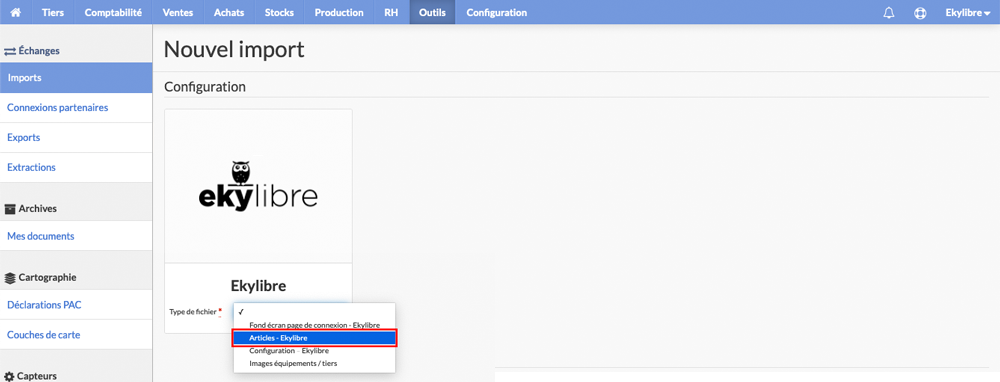
Cliquez sur le bouton "Parcourir" pour sélectionner le fichier ODS des articles à importer dans l'application.
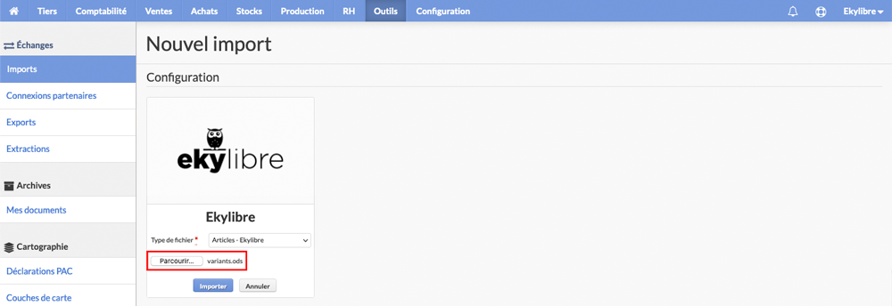
Cliquez sur Importer pour valider l'opération.
Cliquez sur le bouton Exécuter pour valider l'import des articles.
En cas d'incompatibilité, l'application vous avertit immédiatement qu'une erreur est survenue.
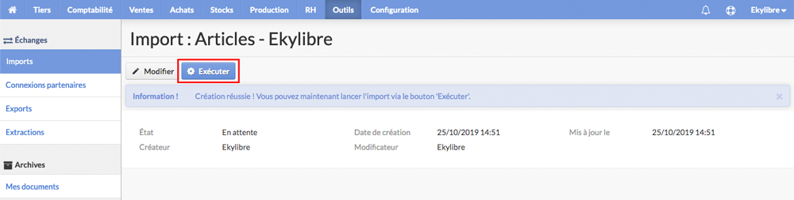
La barre de progression vous informe de l'avancée du transfert des données qui peut prendre plus ou moins de temps en fonction du nombre d'articles à traiter.
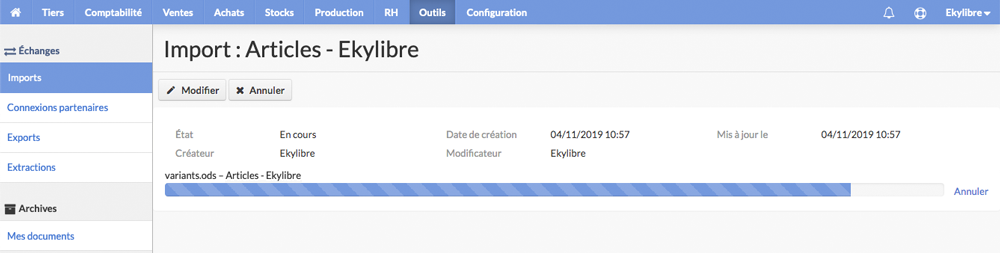
Une fois que la barre d'avancement disparaît, la pastille rougeen haut à droite de la cloche vous indique qu'une opération interne a été effectuée par l'application. Cliquez sur celle-ci pour afficher la notification. En cas d'erreur, vous serez informé(e) de la nature de celle-ci.
vous indique qu'une opération interne a été effectuée par l'application. Cliquez sur celle-ci pour afficher la notification. En cas d'erreur, vous serez informé(e) de la nature de celle-ci.
Affichez la liste des articles pour vérifier la disponibilité des nouvelles données importées dans votre ferme. Notez que le nombre d'articles comptabilisés a également automatiquement été crédité suite à l'import.
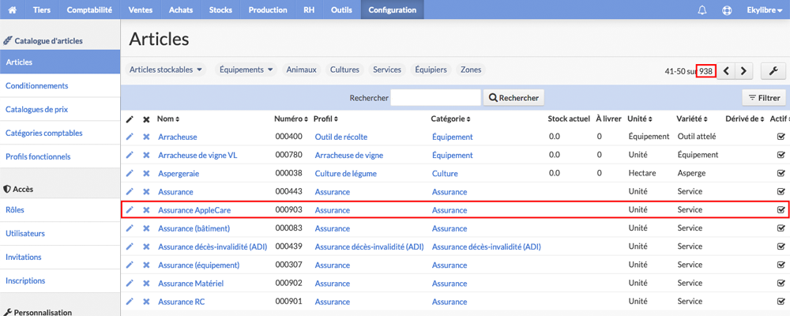
Guide de prise en main • Imports • Import d'équipements
4 – Procédure pour importer des équipement dans l'application
Il est possible d'importer des équipements dans Ekyagri. Cette fonctionnalité nécessite de disposer d'un fichier au format CSV codé en UTF-8 et dont la structure doit strictement respecter les préconisations édictées ci-après.
La structure de ce tableau est basée sur 12 colonnes avec les informations classées selon l'ordre suivant (le symboleindique une donnée obligatoire) :
Nom(le nom de l'équipement)
Variant nomen(important : soit le nom de l'article en nomenclature, soit le code de l'article qui a été affecté dans le fichier variants.ods)
Code (un code optionnel pour désigner l'équipement)
Code place (un code optionnel de la zone de bâtiment attribué au stockage de l'équipement)
Date naissance (la date d'acquisition ou de mise en service de l'équipement)
Marque
Modèle
Nom du propriétaire
Indicateurs (les caractéristiques techniques de l'équipement : puissance, volume, largeur)
Notes
Prix unitaire (coût d'utilisation de l'équipement et non son prix d'achat)
Indicateur de prix (unité de prix du coût d'utilisation - en heure par défaut)
Dans un tableur, la feuille de calcul doit ressembler à cet exemple (le tableau est affiché ici par 4 captures d'écran) :
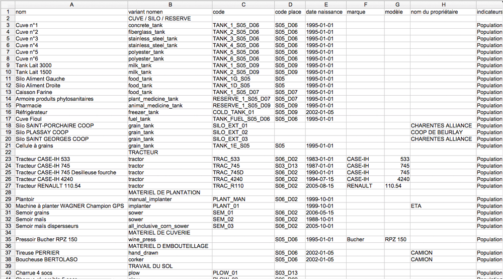
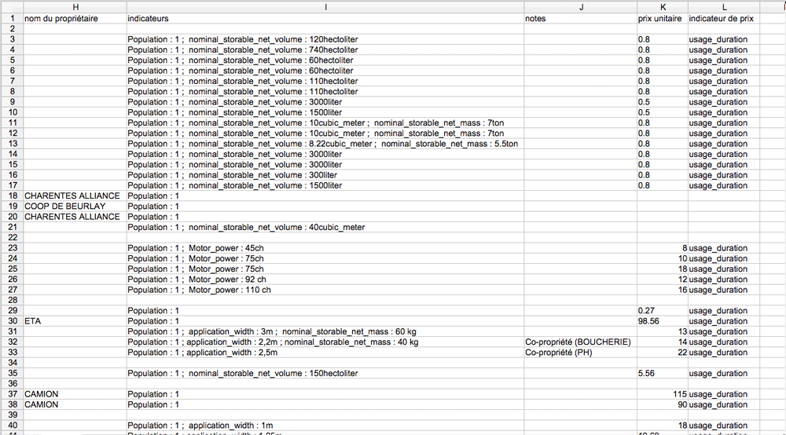
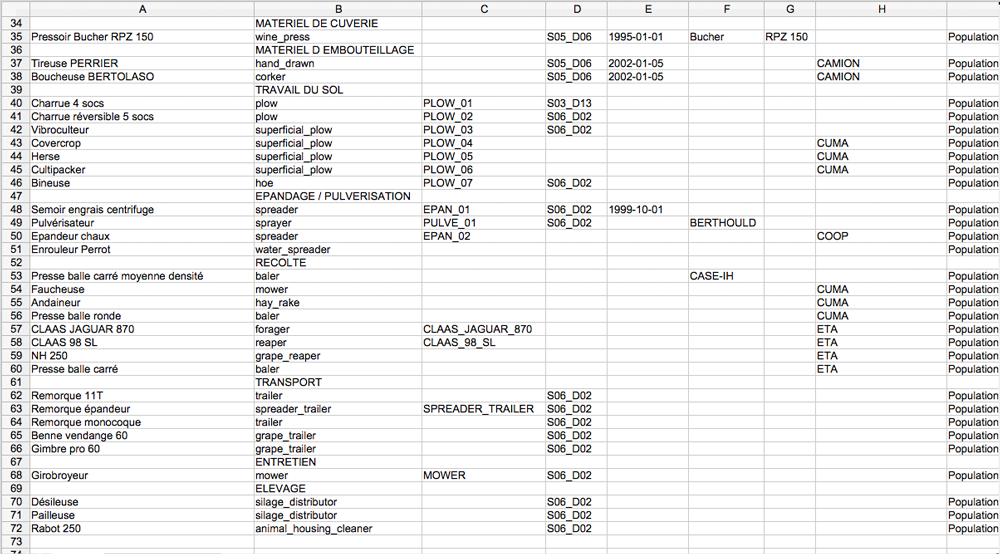
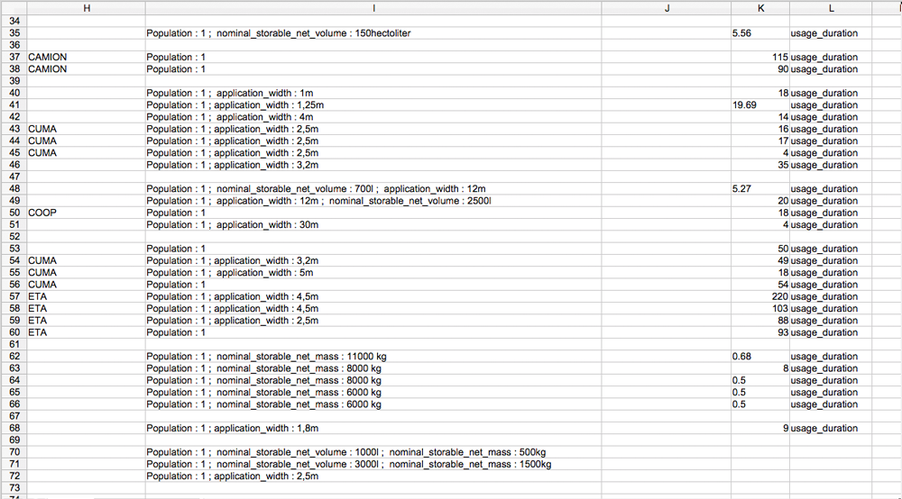
Adaptez les données en votre possession à l'aide d'un tableur comme par exemple Apache OpenOffice ou LibreOffice. Il n'est pas nécessaire que tous les éléments soient renseignés dans les colonnes mais il est primordial que l'ordre indiqué soit respecté. Vous pouvez télécharger un modèle en cliquant sur le lien suivant :
Une fois votre fichier préparé, il est alors possible de réaliser l'intégration des nouvelles données.
Notez que la prise en compte des coûts d'utilisation des équipements au moment de l'import nécessite l'existence d'un catalogue de prix des coûts d'usage (procédure expliquée dans le chapitre 8 - Stocks, tiers et RH).
Le processus suivant vous guide pour importer des équipements dans l'application :
Cliquez sur le lien "Outils" dans le "Menu principal" ou sur le bouton "Outils" de la page d'accueil :
Dans la barre latérale du module, cliquez sur "Imports" dans la section "Échange" symbolisée par l'icône représentant 2 flèches.
Tous les "Imports" déjà réalisés sont listés ici, notamment ceux issus de l'intégration des données TelePAC, ainsi que les zones cultivables et les bâtiments définis dans l'assistant de démarrage.
Cliquez sur le boutonen haut à gauche de la fenêtre principale.
Puis, dans le pavé "Ekylibre" de la section "Production végétale", sélectionnez "Équipements - Ekylibre" dans la liste déroulante des types de fichiers.
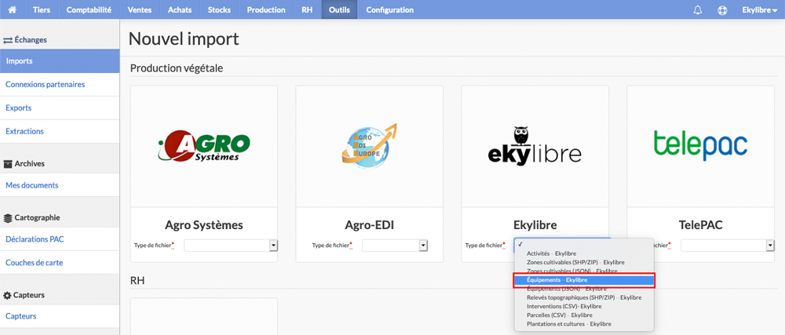
Cliquez sur le bouton "Parcourir" pour sélectionner le fichier CSV des équipements à importer dans l'application.
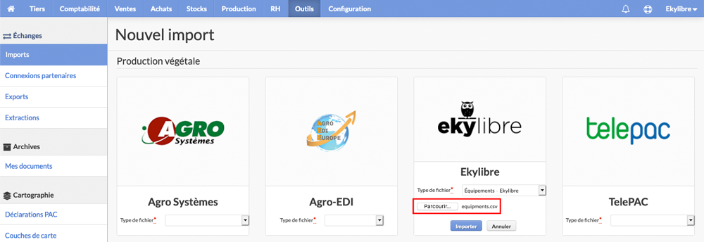
Cliquez sur Importer pour valider l'opération.
Cliquez sur le bouton Exécuter pour valider l'import des équipements.
En cas d'incompatibilité, l'application vous avertit immédiatement qu'une erreur est survenue.
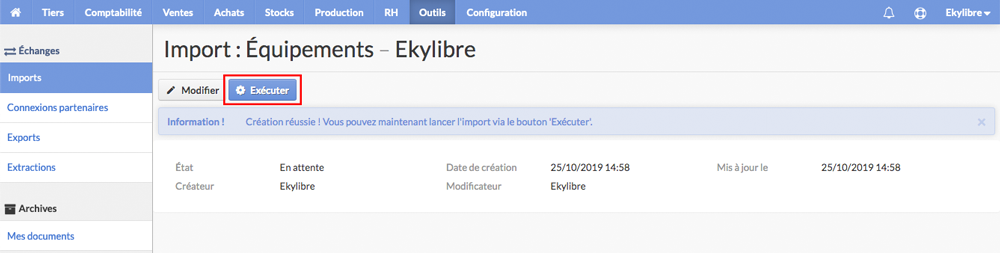
La barre de progression vous informe de l'avancée du transfert des données qui peut prendre plus ou moins de temps en fonction du nombre d'équipements à traiter.
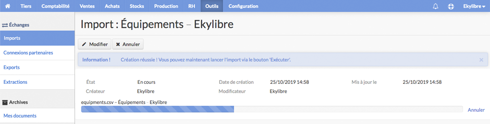
Une fois que la barre d'avancement disparaît, la pastille rougeen haut à droite de la cloche vous indique qu'une opération interne a été effectuée par l'application. Cliquez sur celle-ci pour afficher la notification. En cas d'erreur, vous serez informé(e) de la nature de celle-ci.
vous indique qu'une opération interne a été effectuée par l'application. Cliquez sur celle-ci pour afficher la notification. En cas d'erreur, vous serez informé(e) de la nature de celle-ci.
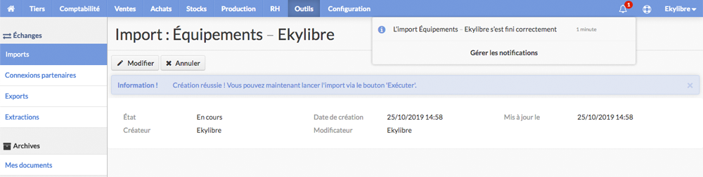
Dans le module "Production", affichez la liste des équipements pour vérifier l'intégrité des données importées et procéder à d'éventuelles modifications.
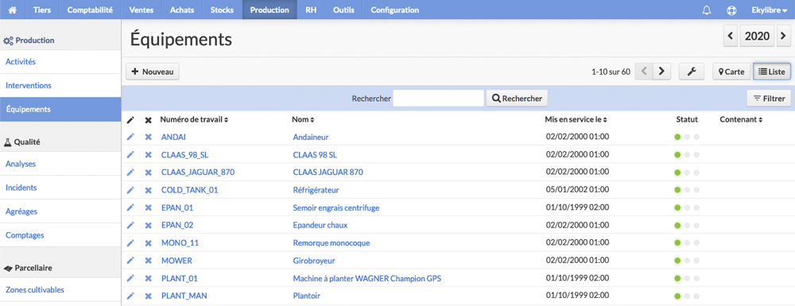
Dans le module "Configuration", affichez le catalogue des "Prix d'usage" pour vérifier l'intégrité des données importées et procéder à d'éventuelles modifications.
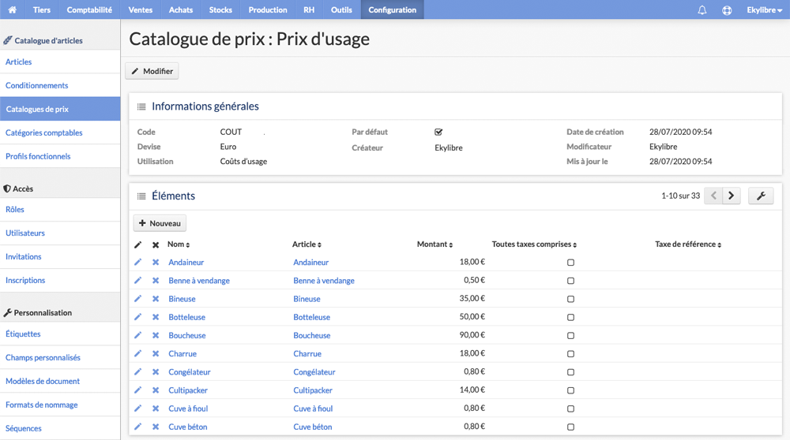
Guide de prise en main • Imports • Import de zones de stockage
5 – Procédure pour importer des zones de stockage
Il est possible d'importer les bâtiments, leurs subdivisions et les aires de stockage dans Ekyagri. Cette fonctionnalité nécessite de disposer d'un fichier au format CSV codé en UTF-8 et dont la structure doit strictement respecter les préconisations édictées ci-après.
La structure de ce tableau est basée sur 6 colonnes avec les informations classées selon l'ordre suivant (le symboleindique une donnée obligatoire) :
Nom(la dénomination de la zone)
Nature(un bâtiment, la subdivision d'un bâtiment ou d'une aire de stockage)
Code (un code optionnel pour désigner la zone)
Code groupe (un code optionnel pour désigner l'appartenance de la zone à un groupe)
Code place (un code optionnel pour désigner la situation de la découpe par rapport à une zone principale)
Description (un commentaire optionnel)
Dans un tableur, la feuille de calcul doit ressembler à cet exemple :
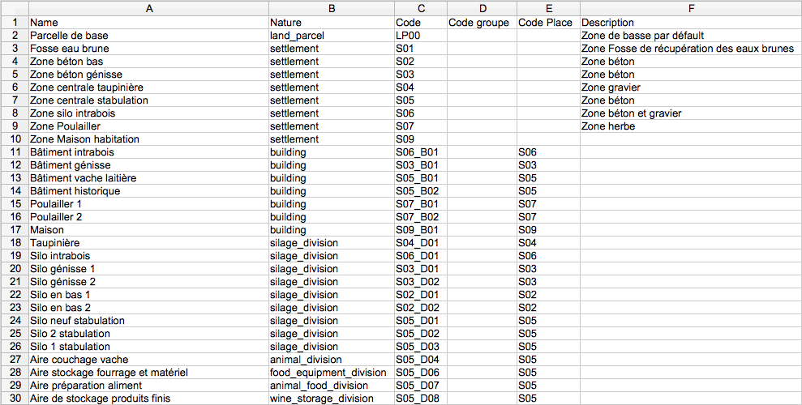
Adaptez les données en votre possession à l'aide d'un tableur comme par exemple Apache OpenOffice ou LibreOffice. Il n'est pas nécessaire que tous les éléments soient renseignés dans les colonnes mais il est primordial que l'ordre indiqué soit respecté. Vous pouvez télécharger un modèle en cliquant sur le lien suivant :
Une fois votre fichier préparé, il est alors possible de réaliser l'intégration des nouvelles données. Le processus suivant vous guide pour importer des zones de stockage dans l'application :
Cliquez sur le lien "Outils" dans le "Menu principal" ou sur le bouton "Outils" de la page d'accueil :
Dans la barre latérale du module, cliquez sur "Imports" dans la section "Échange" symbolisée par l'icône représentant 2 flèches.
Tous les "Imports" déjà réalisés sont listés ici, notamment ceux issus de l'intégration des données TelePAC, ainsi que les zones cultivables et les bâtiments définis dans l'assistant de démarrage.
Cliquez sur le boutonen haut à gauche de la fenêtre principale.
Puis, dans le pavé "Ekylibre" de la section "Stocks", sélectionnez "Zones de stockage - Ekylibre" dans la liste déroulante des types de fichiers.
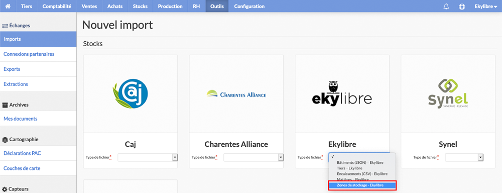
Cliquez sur le bouton "Parcourir" pour sélectionner le fichier CSV des zones à importer dans l'application.
Cliquez sur Importer pour valider l'opération.
Cliquez sur le bouton Exécuter pour valider l'import des zones de stockage.
En cas d'incompatibilité, l'application vous avertit immédiatement qu'une erreur est survenue.
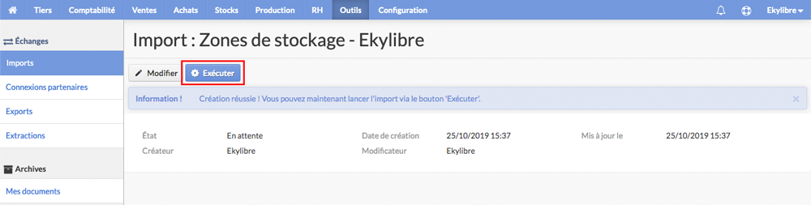
La barre de progression vous informe de l'avancée du transfert des données qui peut prendre plus ou moins de temps en fonction du nombre de zones à traiter.

Une fois que la barre d'avancement disparaît, la pastille rougeen haut à droite de la cloche vous indique qu'une opération interne a été effectuée par l'application. Cliquez sur celle-ci pour afficher la notification. En cas d'erreur, vous serez informé(e) de la nature de celle-ci.
vous indique qu'une opération interne a été effectuée par l'application. Cliquez sur celle-ci pour afficher la notification. En cas d'erreur, vous serez informé(e) de la nature de celle-ci.
Dans le module "Stocks", affichez la liste des zones pour vérifier l'intégrité des données importées et procéder à d'éventuelles modifications.
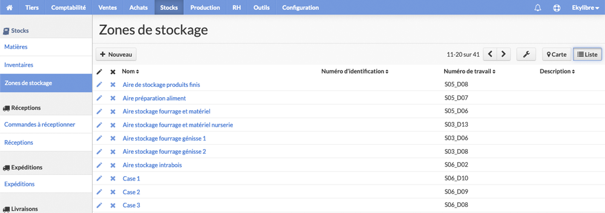
En l'absence de contour dessiné, les zones de bâtiments importées n'apparaissent pas dans la vue "Carte", car les informations de géolocalisation ne sont pas renseignées dans le fichier CSV. Elles demeurent cependant parfaitement utilisables pour renseigner le lieu de stockage des marchandises lors d'une réception et pour sélectionner un habitat ou une installation dans l'enregistrement de certaines interventions.
Guide de prise en main • Imports • Fiche parcellaire Daplos Agro-EDI
6 – Procédure pour importer une fiche parcellaire Daplos Agro-EDI
Pour favoriser le transfert des données et l'interopérabilité entre les différents systèmes d'information liés aux pratiques agricoles, de nombreux partenaires ont créé dès 1992 l'association Agro-EDI Europe pour élaborer une fiche parcellaire normalisée. La fonctionnalité d'import d'Ekyagri permet à l'agriculteur de récupérer l'ensemble des informations des interventions enregistrées dans un autre logiciel afin de charger les données historiques de sa ferme.
L'utilisation de la fonction d'import d'une fiche parcellaire Daplos Agro-EDI pour une année donnée implique que vous ayez préalablement importé un fichier de déclaration TelePAC de la même année.
Le processus suivant vous guide pour importer une fiche parcellaire Daplos Agro-EDI.
Cliquez sur le lien "Outils" dans le "Menu principal" ou sur le bouton "Outils" de la page d'accueil :
Dans la barre latérale du module, cliquez sur "Imports" dans la section "Échange" symbolisée par l'icône représentant 2 flèches.
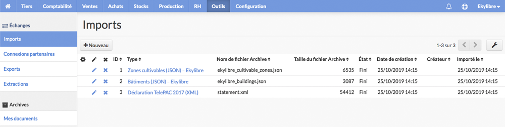
Tous les "Imports" déjà réalisés sont listés ici, notamment ceux issus de l'intégration des données TelePAC, ainsi que les zones cultivables et les bâtiments définis dans l'assistant de démarrage.
Cliquez sur le boutonen haut à gauche de la fenêtre principale.
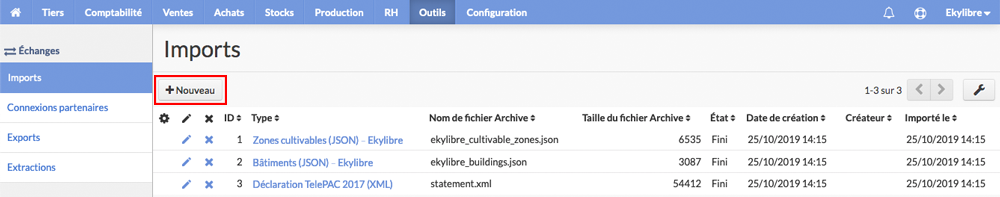
Puis, dans le pavé "Agro-EDI" de la section "Production végétale", sélectionnez "Production végétale" dans la liste déroulante des types de fichiers disponibles.
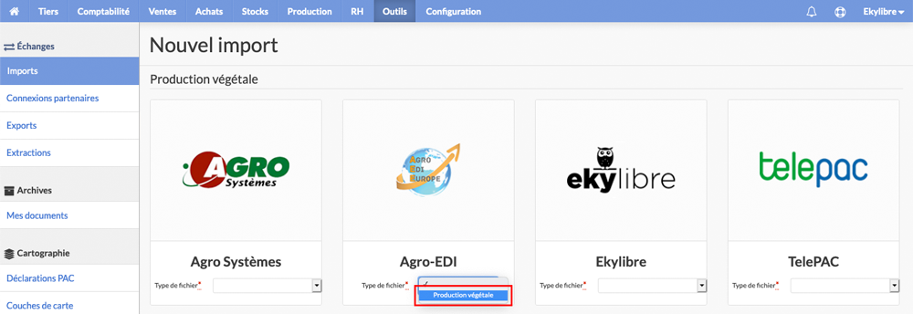
Cliquez sur le bouton "Parcourir" pour sélectionner la fiche parcellaire Daplos Agro-EDI des interventions à importer dans l'application.
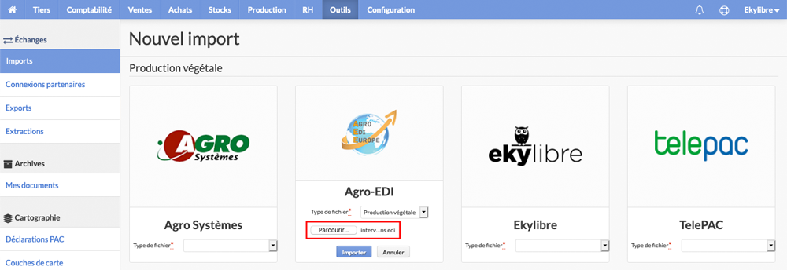
Cliquez sur Importer pour valider l'opération.
Cliquez sur le bouton Exécuter pour valider l'import de la fiche parcellaire.
En cas d'incompatibilité, l'application vous avertit immédiatement qu'une erreur est survenue.
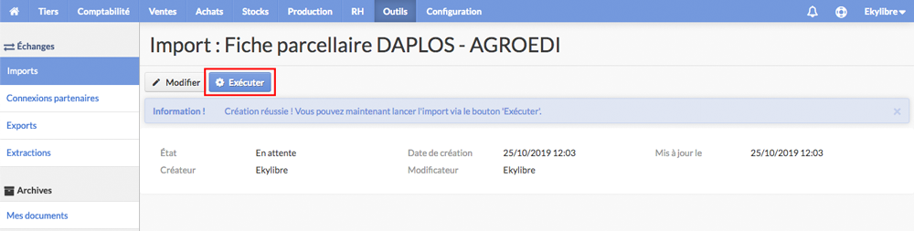
La barre de progression vous informe de l'avancée du transfert des données qui peut prendre plus ou moins de temps en fonction du nombre de parcelles et d'interventions à traiter.
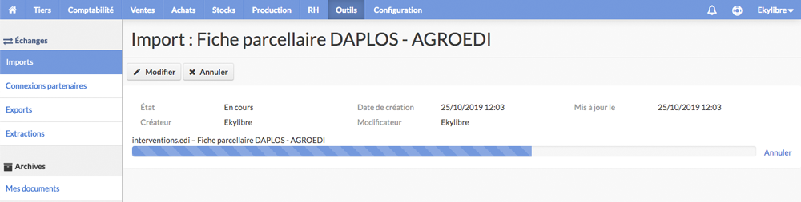
Une fois que la barre d'avancement disparaît, la pastille rougeen haut à droite de la cloche vous indique qu'une opération interne a été effectuée par l'application. Cliquez sur celle-ci pour afficher la notification. En cas d'erreur, vous serez informé(e) de la nature de celle-ci.
vous indique qu'une opération interne a été effectuée par l'application. Cliquez sur celle-ci pour afficher la notification. En cas d'erreur, vous serez informé(e) de la nature de celle-ci.
Cliquez sur le lien "Production" dans le "Menu principal" ou sur le bouton "Production" de la page d'accueil pour afficher le "Tableau de bord de la production" :

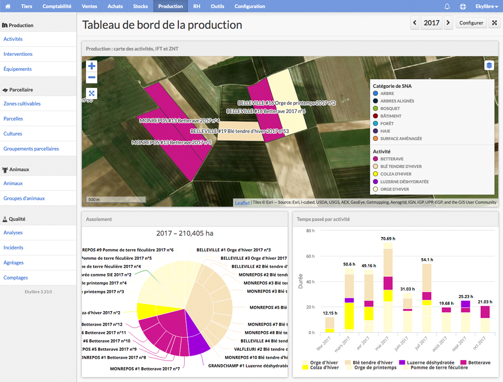
Selon le paramétrage de votre "Tableau de bord", vous pouvez d'ores et déjà visualiser les surfaces assolées et le temps passé par activité.
Dans la barre latérale du module, cliquez sur "Interventions" dans la section "Production" symbolisée par l'icône d'une ferme . Activez le mode d'affichage "Liste" pour consulter toutes les interventions importées dans l'application.
. Activez le mode d'affichage "Liste" pour consulter toutes les interventions importées dans l'application.
Le cas échéant, assurez-vous d'être sur la bonne campagne de production en la sélectionnant avec les flècheset en haut à droite de la fenêtre principale.
en haut à droite de la fenêtre principale.
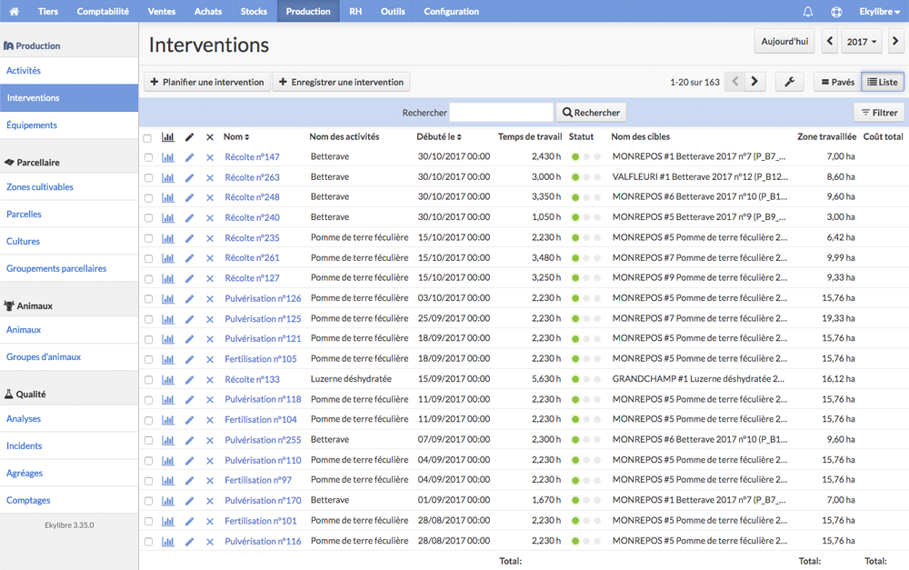
Cliquez sur le nom d'une intervention pour en afficher le détail. Les parcelles (cibles d'intervention), engrais, produits phytosanitaires (intrants d'intervention) et produits de récolte (extrants d'intervention) sont maintenant tous consignés dans Ekyagri et vous permettent d'éditer le registre des interventions, le cahier de traçabilité et le registre phytosanitaire.
Guide de prise en main • Imports • Fichier Isapaye (ECR)
7 – Procédure pour importer un fichier ECR Isapaye
Destiné aux employeurs MSA, le logiciel Isapaye développé par la société Isagri sécurise et automatise la réalisation des fiches de paie et des déclarations sociales.
La fonctionnalité d'import d'Ekyagri permet à l'agriculteur d'intégrer facilement, dans un journal des opérations diverses, l'ensemble des écritures comptables de paie liées à l'enregistrement des salaires et au calcul des charges dans Isapaye.
Le processus suivant vous guide pour importer un fichier des écritures comptables de paie (ECR) dans l'application.
Dans l'application Isapaye, sélectionnez, dans le menu principal, l'onglet "Éditions" puis cliquez sur le lien "Écritures comptables" :
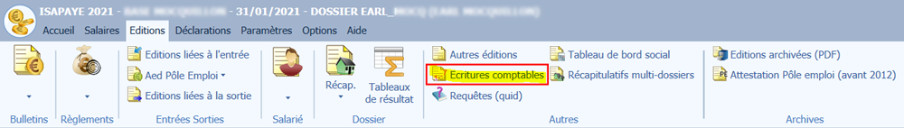
Sélectionnez la période en haut à gauche de la fenêtre principale, puis paramétrez l'export des écritures comptables de paie et validez l'enregistrement du fichier ECR en cliquant sur le bouton "Transfert" :
Cliquez sur le lien "Outils" dans le "Menu principal" ou sur le bouton "Outils" de la page d'accueil :
Dans la barre latérale du module, cliquez sur "Imports" dans la section "Échange" symbolisée par l'icône représentant 2 flèches.
Tous les "Imports" déjà réalisés sont listés ici, notamment ceux issus de l'intégration des données TelePAC, ainsi que les zones cultivables et les bâtiments définis dans l'assistant de démarrage.
Cliquez sur le boutonen haut à gauche de la fenêtre principale.
Puis, dans le pavé "Isagri" de la section "Comptabilité", sélectionnez "Écritures comptables (ECR) Isapaye - Isagri" dans la liste déroulante des types de fichiers disponibles.
Cliquez sur le bouton "Parcourir" pour sélectionner le fichier ECR obtenu à l'étape no 1 de cette procédure.
Cliquez sur Importer pour valider l'opération.
Cliquez sur le bouton Exécuter pour valider l'import des écritures comptables de paie.
En cas d'incompatibilité, l'application vous avertit immédiatement qu'une erreur est survenue.
La barre de progression vous informe de l'avancée du transfert des données à traiter.
Une fois que la barre d'avancement disparaît, la pastille rougeen haut à droite de la cloche vous indique qu'une opération interne a été effectuée par l'application. Cliquez sur celle-ci pour afficher la notification. En cas d'erreur, vous serez informé(e) de la nature de celle-ci.
vous indique qu'une opération interne a été effectuée par l'application. Cliquez sur celle-ci pour afficher la notification. En cas d'erreur, vous serez informé(e) de la nature de celle-ci.
Cliquez sur le lien "Journaux" de la section "Journaux" du module "Comptabilité". Durant l'import, un nouveau journal comptable "Import ISAPAYE" a automatiquement été créé pour consigner les écritures de paie.
Dans la liste des journaux, cliquez sur le nom du journal "Import ISAPAYE" ou sur le code "ISAP" pour consulter les écritures ajoutées en mode brouillard lors de l'import.
Guide de prise en main • Imports • Fichier TelePAC (XML)
8 – Procédure pour importer un fichier TelePAC
La création des zones cultivables et des activités agricoles grâce à l'import d'un fichier TelePAC se fait généralement dans l'assistant de démarrage mais vous pouvez avoir passé cette étape et décidé d'intégrer vos données plus tard dans l'application. Vous pouvez aussi avoir importé une déclaration TelePAC et décidé d'en intégrer d'autres complémentaires.
La fonctionnalité d'import d'Ekyagri permet à l'agriculteur de récupérer l'ensemble des informations de la gestion parcellaire de son exploitation et des activités déclarées à la PAC à partir de 2015.
Le processus suivant vous guide pour importer un fichier TelePAC dans l'application.
Cliquez sur le lien "Outils" dans le "Menu principal" ou sur le bouton "Outils" de la page d'accueil :
Dans la barre latérale du module, cliquez sur "Imports" dans la section "Échange" symbolisée par l'icône représentant 2 flèches.
Tous les "Imports" déjà réalisés sont listés ici, notamment ceux issus de l'intégration des données TelePAC, ainsi que les zones cultivables et les bâtiments définis dans l'assistant de démarrage.
Cliquez sur le boutonen haut à gauche de la fenêtre principale.
Puis, dans le pavé "TelePAC" de la section "Production végétale", sélectionnez la déclaration dans la liste déroulante des types de fichiers disponibles.
Cliquez sur le bouton "Parcourir" pour sélectionner le fichier XML de la déclaration à importer dans l'application.
Cliquez sur Importer pour valider l'opération.
Cliquez sur le bouton Exécuter pour valider l'import de la déclaration.
En cas d'incompatibilité, l'application vous avertit immédiatement qu'une erreur est survenue.
La barre de progression vous informe de l'avancée du transfert des données qui peut prendre plus ou moins de temps en fonction du nombre de parcelles et d'activités à traiter.

Une fois que la barre d'avancement disparaît, la pastille rougeen haut à droite de la cloche vous indique qu'une opération interne a été effectuée par l'application. Cliquez sur celle-ci pour afficher la notification. En cas d'erreur, vous serez informé(e) de la nature de celle-ci.
vous indique qu'une opération interne a été effectuée par l'application. Cliquez sur celle-ci pour afficher la notification. En cas d'erreur, vous serez informé(e) de la nature de celle-ci.
Cliquez sur le lien "Production" dans le "Menu principal" ou sur le bouton "Production" de la page d'accueil pour afficher le "Tableau de bord de la production" pour une campagne donnée :
Assurez-vous d'être sur la bonne campagne de production en la sélectionnant avec les flècheset en haut à droite de la fenêtre principale.

Répétez la procédure pour importer successivement plusieurs déclarations TelePAC (issues de différentes campagnes ou de différentes fermes).
Guide de prise en main • Outils • Extractions
c - Extractions de données
Ekyagri permet de réaliser l'extraction de données sous la forme de feuilles de calcul (tableaux) au format CSVVoir glossaire.
Grâce à des recherches croisées entre les différentes tablesVoir glossaire de l'application et à des filtres avancés, vous pouvez construire des processus afin d'obtenir automatiquement des informations ciblées. Ces données pourront ensuite être visualisées dans un tableur comme par exemple Apache OpenOffice ou LibreOffice et/ou exploitées dans un autre logiciel.
Guide de prise en main • Outils • Extraction factures impayées
1 – Procédure pour extraire une liste de factures impayées
Dans l'exemple suivant, sur la base des factures supérieures à 100 euros qui auraient dû être payées à une date donnée, on souhaite obtenir le nom, l'adresse email des clients, le montant et le numéro des factures en souffrance, afin de réaliser une campagne de relance avec une solution d'emailing tierce.
Le processus suivant vous guide pour réaliser un nouveau processus d'extraction.
Cliquez sur le lien "Outils" dans le "Menu principal" ou sur le bouton "Outils" de la page d'accueil :
Dans la barre latérale du module, cliquez sur "Extractions" dans la section "Échange" symbolisée par l'icône représentant 2 flèches.
Tous les processus d'extraction de données déjà créés sont listés ici.
Cliquez sur le boutonen haut à gauche de la fenêtre principale.
Nommez le nouveau processus et sélectionnez la tableVoir glossaire principale dans la liste déroulante "Racine". Dans l'application, les factures de ventes sont rattachées à la tableVoir glossaire "Ventes", il faut donc sélectionner celle-ci en premier.
Renseignez enfin de manière explicite la description du rôle du nouveau processus comme par exemple "Liste les tiers avec factures impayées supérieures à 100 € au 1er septembre 2020".

Cliquez sur Créer pour valider l'opération.
La tableVoir glossaire racine "Vente" permet de définir le premier critère de recherche. Sélectionnez "Montant HT" dans la liste déroulante, puis cliquez sur le bouton "Ajouter". Notez que la liste déroulante est scindée en 2 parties : une première dont les éléments appartiennent à la table "Vente" et une seconde qui regroupe des "Tables liées".
Le critère "Montant HT" est alors affiché à droite du symboleainsi que la case à cocherpermettant d'activer ou non celui-ci lors d'une extraction.
Cliquez sur le bouton "Ajouter un filtre", puis définissez la condition "supérieur à" avec le montant désiré (100) et cliquez sur le bouton "Valider" pour enregistrer le filtre.
Sélectionnez "À régler au plus tard le" dans la liste déroulante "Vente", puis cliquez sur le bouton "Ajouter".
Appliquez un nouveau filtre en définissant la condition "inférieure ou égale à" avec la date butoir d'encaissement souhaitée et cliquez sur le bouton "Valider".
Dans la liste déroulante "Vente", sélectionnez "Client" dans la partie "Tables liées" et cliquez sur le bouton "Ajouter".
Puis, dans cette nouvelle liste déroulante "Client", sélectionnez "Nom complet" et cliquez sur le bouton "Ajouter" pour récupérer le nom du client dans l'extraction.
Notez la présence du symbole à gauche de "Client" indiquant que l'information extraite est située dans une tableVoir glossaire différente de la table initiale "Vente" dans la base de données.
à gauche de "Client" indiquant que l'information extraite est située dans une tableVoir glossaire différente de la table initiale "Vente" dans la base de données.
Dans la même liste déroulante "Client", sélectionnez "Courriels (e-mails)" dans la partie "Tables liées" et cliquez sur le bouton "Ajouter".
Sélectionnez "Coordonnée" dans la liste déroulante "Courriels (e-mails)" et cliquez sur le bouton "Ajouter" pour récupérer l'adresse email du client dans l'extraction.
Ajoutez un nouveau filtre en définissant la condition "Contient" et le symbole "@" (arobace) pour exclure les adresses postales, puis cliquez sur le bouton "Valider".
Notez la présence du symbole à gauche de "Courriels (e-mails)" indiquant que l'information extraite est située dans une tableVoir glossaire différente de la table "Client" dans la base de données.
à gauche de "Courriels (e-mails)" indiquant que l'information extraite est située dans une tableVoir glossaire différente de la table "Client" dans la base de données.
Sélectionnez finalement "Numéro" dans la liste déroulante "Vente" (comme dans l'étape no 4) pour ajouter les numéros des factures impayées dans l'extraction et cliquez sur le bouton "Ajouter".
Cliquez sur Modifier pour valider l'opération.

Cliquez sur le lien "Extractions" dans la barre latérale du module, puis cliquez sur le symboleà gauche du nom du processus pour lancer la création du fichier CSVVoir glossaire avec les informations attendues. En fonction de la quantité de données à traiter, patientez quelques instants avant l'obtention du fichier.
Cliquez sur le symbolepour dupliquer un processus d'extraction ou sur le crayon(ou son nom) pour le modifier.
Cela permet notamment de corriger facilement un filtre (comme par exemple effectuer un changement de date ou de montant) pour adapter le processus existant à un nouveau besoin.
Si vous souhaitez réaliser une extraction complexe et que vous n'y parvenez pas, nous vous recommandons de faire appel au service support en le joignant :
Guide de prise en main • Outils • Gestion des documents archivés
d - Gestion des documents archivés
Ekyagri | Ekyviti archive et met à la disposition de l'utilisateur l'ensemble des documents issus d'une impression ou ajoutés en pièces jointes (justificatifs au format PDF ou sous forme d'image numérique au format JPEG/PNG, etc.) pour consultation, impression ou vérification.
La fonctionnalité "Mes documents" permet également un accès direct au site ekylibre.com pour vérifier l'authenticité de certains documents (balance, Grand-livre, journaux après clôture, factures de vente) et garantir l'intégrité des données archivées.
1 - Procédure pour gérer les documents dans Ekyagri | Ekyviti
Le processus suivant vous guide pour exploiter la fonctionnalité de la "Mes documents".
Cliquez sur le lien "Outils" dans le "Menu principal" ou sur le bouton "Outils" de la page d'accueil :
Dans la barre latérale du module, cliquez sur "Mes documents" dans la section "Archives" symbolisée par l'icône représentant une boîte à archives .
.
Tous les documents issus d'une impression ou ajoutés en pièces jointes sont listés ici.
Notez que la case devant le numéro d'un document dans la colonne "Obligatoire" indique qu'une signature électronique permet de vérifier son authenticité. Cette signature est automatiquement ajoutée à la balance, au Grand-livre, aux états des journaux après clôture et aux factures de vente.
devant le numéro d'un document dans la colonne "Obligatoire" indique qu'une signature électronique permet de vérifier son authenticité. Cette signature est automatiquement ajoutée à la balance, au Grand-livre, aux états des journaux après clôture et aux factures de vente.
Une fois générés, ces documents signés ne peuvent pas être supprimés en cliquant sur la croix .
.
Cliquez sur le numéro ou sur le nom d'un document pour en afficher un aperçu.
Exemple d'une facture de vente avec une signature électronique :
Exemple de l'image d'un équipement immobilisé dans un achat :
Cliquez sur cet aperçu pour afficher le document dans une nouvelle page ou dans un nouvel onglet (en fonction du navigateur web utilisé), afin de l'imprimer ou de le télécharger sur votre disque dur.
Si le document est signé numériquement, cliquez surpour visualiser la signature dans une fenêtre modaleVoir glossaire.
Cliquez sur Vérifier la signature pour contrôler l'authenticité du document sur le site ekylibre.com.
La signature est automatiquement copiée dans le lien web du bouton pour simplifier le processus de vérification et éviter tout risque potentiel d'erreur de saisie.
Une fois redirigé(e) vers le site ekylibre.com, cliquez sur le bouton "Parcourir…" pour sélectionner le fichier précédemment téléchargé dans "Mes documents".
Cliquez enfin sur le bouton Lancer la vérification pour obtenir ou non la certification de l'authenticité du document.
Guide de prise en main • Outils • Connexions partenaires
e - Connexions partenaires
Ekyagri et Ekyviti vous permettent de définir des connexions partenaires afin d'afficher, dans des cellules dédiées, les informations en provenance d'un autre fournisseur de services en ligne. Ces connexions offrent également la possibilité d'échanger ou d'intégrer automatiquement des données enregistrées dans une solution tierce ou via des capteurs et des boîtiers connectés. La connexion avec la solution Baqio est documentée dans le chapitre Ekyviti.
Notez que pour être fonctionnelles, certaines connexions partenaires sont susceptibles d'engendrer des frais liés à l'achat de matériels compatibles et/ou à la souscription d'abonnements complémentaires.
Guide de prise en main • Outils • Connexion OpenWeatherMap
1 – Connexion avec OpenWeatherMap
Le processus suivant vous guide pour intégrer les prévisions météorologiques du service OpenWeatherMap. Cette connexion implique la création d'un compte utilisateur sur leur site web (gratuit) afin d'obtenir une clef API qui sera ensuite utilisée par l'indicateur "Météo" de votre ferme Ekyagri ou de votre domaine Ekyviti.
Cliquez sur le bouton "Sign In" dans le menu principal en haut à droite du site OpenWeatherMap.
Cliquez ensuite sur le lien "Create an Account" pour initier la création de votre compte utilisateur.
Renseignez votre nom d'utilisateur.
Entrez une adresse email fonctionnelle et à laquelle vous avez accès pour terminer le processus d'inscription et vous identifier.
Choisissez un mot de passe et saisissez-le à deux reprises pour le confirmer.
Cochez les casesdevant les mentions "I am 16 years old and over" et "I agree with Privacy Policy, Terms and conditions of sale and Websites terms and conditions of use". Activez la protection anti-spam devant l'intitulé "Je ne suis pas un robot".
Cliquez ensuite sur le bouton Create Account pour valider la création de votre compte utilisateur.
Un email vous est automatiquement adressé pour valider l'adresse que vous avez saisie lors de la création de votre compte.
Cliquez sur le bouton Verify your email pour terminer le processus d'inscription. Vous êtes alors automatiquement redirigé(e) vers le site d'OpenWeatherMap.
Identifiez-vous à l'aide de votre adresse email et de votre mot de passe, puis cliquez sur le bouton Submit.
Cliquez ensuite sur le bouton "Pricing" dans le menu principal pour afficher les différentes offres du partenaire.
Cliquez sur le bouton "Get API key" de l'offre "Free" pour sélectionner l'abonnement gratuit.
Cliquez sur le bouton "API keys" dans le menu secondaire.
Une nouvelle clef API est générée. Elle est composée de caractères alphanumériques et va permettre d'établir une connexion sécurisée entre votre instance Ekyagri | Ekyviti et les services de prévisions météorologiques mis à disposition par OpenWeatherMap.
Notez qu'un email contenant la clef API est également automatiquement envoyé à votre adresse.
Cliquez sur le lien "Outils" dans le "Menu principal" ou sur le bouton "Outils" de la page d'accueil :
Dans la barre latérale du module, cliquez sur "Connexions partenaires" dans la section "Échanges" symbolisée par l'icône représentant 2 flèches.
Cliquez sur le bouton "Services en ligne" en bas de la fenêtre principale.
Cliquez ensuite sur le bouton "Nouveau" et sélectionnez OpenWeatherMap dans la liste déroulante.
Collez ou saisissez la clef API OpenWeatherMap obtenue dans le champ texte prévu à cet effet.
Cliquez sur Créer pour valider l'opération.
Organisez la disposition des indicateurs dans le tableau de bord de votre choix comme expliqué dans la section « Personnalisation des tableaux de bord ».
Soyez patient car l'activation de la clef API peut prendre un peu de temps (jusqu'à 2 h). Affichez ou masquez certaines données en cliquant sur les quatre icônes situées en bas de l'indicateur "Météo" comme par exemple "Pluviométrie" ou "Vitesse du vent".
La clef est également valide pour afficher les informations de la cellule "Météo avec conditions de pulvérisation" :
Notez que la suppression d'un compte utilisateur OpenWeatherMap, associé à une clef API utilisée par les cellules "Météo" ou "Météo avec conditions de pulvérisation", désactive automatiquement l'affichage des prévisions météorologiques et des préconisations de traitement.
Guide de prise en main • Outils • Connexion Samsys
2 – Connexion avec la solution Samsys
Le processus suivant vous guide pour établir la connexion et synchroniser les trajets géolocalisés avec les produits Samsys dans l'objectif d'enregistrer une nouvelle intervention dans Ekyagri | Ekyviti.
Assurez-vous que toutes vos zones cultivables et vos équipements sont correctement configurés dans l'application.

Après synchronisation, vous retrouverez ces éléments dans votre interface utilisateur Samsys.
Cliquez sur le lien "Outils" dans le "Menu principal" ou sur le bouton "Outils" de la page d'accueil :
Dans la barre latérale du module, cliquez sur "Connexions partenaires" dans la section "Échanges" symbolisée par l'icône représentant 2 flèches.

Cliquez sur le pavé "Samsys", puis saisissez l'identifiant et le mot de passe utilisés pour accéder à votre compte utilisateur sur le site internet de Samsys.
Cliquez sur Créer pour valider l'opération.
Le contour du pavé bascule dans la couleur du thème de l'interface et vous indique que votre identifiant et votre mot de passe sont validés pour établir la connexion avec l'application.

Notez qu'en cliquant sur la flèche en haut à droite du pavé, la connexion est alors immédiatement désactivée.
Cliquez sur le lien "Production" dans le "Menu principal" ou sur le bouton "Production" de la page d'accueil :
Dans la barre latérale du module, cliquez sur "Trajets géolocalisés" dans la section "Production" symbolisée par l'icône d'une ferme .
.
Cliquez sur le bouton "Synchroniser les trajets des dernières 48h" en haut à gauche de la fenêtre principale.
Dès que vous avez lancé la synchronisation, un "spinner" (animation de chargement) est affiché à droite du bouton qui devient inactif durant toute la durée de l'opération. Patientez quelques instants car le transfert peut prendre plus ou moins de temps en fonction du nombre de trajets à traiter.
Une fois que le "spinner" du chargement disparaît, la pastille rougeen haut à droite de la cloche vous indique qu'une opération interne a été effectuée par l'application. Cliquez sur celle-ci pour afficher la notification. En cas d'erreur, vous serez informé(e) de la nature de celle-ci.
vous indique qu'une opération interne a été effectuée par l'application. Cliquez sur celle-ci pour afficher la notification. En cas d'erreur, vous serez informé(e) de la nature de celle-ci.
Tous les trajets transférés depuis la solution Samsys sont listés ici. Leur état pourra évoluer vers "Déjà converti" ou "Partiellement converti" suite à la création d'une intervention ou d'un rapprochement.
Cochez les casessituées à gauche d'un ou de plusieurs numéro de votre choix pour activer le bouton permettant de supprimer la sélection d'un ou de plusieurs trajets.
Cliquez sur le numéro d'un trajet géolocalisé pour afficher celui-ci dans la carte ainsi que les différentes sections qui le composent.
Dans la liste, sélectionnez une ou plusieurs sections du trajet à prendre en compte pour enregistrer une nouvelle intervention en cochant la casedevant les éléments de votre choix.
Cliquez sur le bouton "Enregistrer une intervention". Patientez quelques instants car le processus, exécuté en tâche de fond, peut prendre plus ou moins de temps en fonction du nombre de points géolocalisés qui composent la ou les sections du trajet à traiter.
La pastille rougeen haut à droite de la cloche vous indique qu'une opération interne a été effectuée par l'application. Cliquez sur celle-ci pour afficher la notification.
vous indique qu'une opération interne a été effectuée par l'application. Cliquez sur celle-ci pour afficher la notification.
Lorsque la conversion est réussie, le message affiché est un lien cliquable qui redirige vers la page de création d'une nouvelle intervention.
Grâce à la géolocalisation, les parcelles ou les cultures déjà créées sont automatiquement identifiées et sélectionnées dans l'intervention.
Complétez les éléments de l'intervention, puis cliquez sur Créer pour valider l'opération.
Dans la liste, sélectionnez une ou plusieurs sections du trajet à prendre en compte pour rapprocher un trajet géolocalisé avec une intervention planifiée en cochant la casedevant les éléments de votre choix.
Cliquez sur le bouton "Rapprocher avec une intervention planifiée". Une fenêtre modale permet de choisir une intervention parmi celles qui ont été préalablement planifiées afin de récupérer tous les éléments déjà saisis (intrants, doses, équipiers, équipements, etc.).
La liste des interventions proposées est automatiquement filtrée selon 3 critères : par une ou plusieurs parcelles/cultures identifiées d'après le trajet, par les équipements utilisés et par la date de début des travaux. Ce tri permet de faciliter la validation du rapprochement entre un trajet et une intervention planifiée.
Cochez le bouton radio devant l'intervention de votre choix et cliquez sur Valider pour réaliser le rapprochement (si une seule intervention est identifiée, elle est sélectionnée par défaut).
devant l'intervention de votre choix et cliquez sur Valider pour réaliser le rapprochement (si une seule intervention est identifiée, elle est sélectionnée par défaut).
Patientez quelques instants car le processus, exécuté en tâche de fond, peut prendre plus ou moins de temps en fonction du nombre de points géolocalisés qui composent la ou les sections du trajet à traiter.
La pastille rougeen haut à droite de la cloche vous indique qu'une opération interne a été effectuée par l'application. Cliquez sur celle-ci pour afficher la notification. Lorsque la conversion est réussie, le message affiché est un lien cliquable qui redirige vers l'intervention ciblée pour vérifier la conformité des travaux réalisés avec leur planification.
vous indique qu'une opération interne a été effectuée par l'application. Cliquez sur celle-ci pour afficher la notification. Lorsque la conversion est réussie, le message affiché est un lien cliquable qui redirige vers l'intervention ciblée pour vérifier la conformité des travaux réalisés avec leur planification.
La fiche détaillée de l'intervention est alors affichée et son statut bascule de "Prévue" à "Terminée". Elle demeure modifiable pour enregistrer des changements ou la compléter le cas échéant.
Guide de prise en main • Outils • Connexion Weenat
3 – Connexion avec la solution Weenat
Le processus suivant vous guide pour établir la connexion et transférer les mesures des précipitations enregistrées avec les capteurs agro-météo Weenat dans Ekyagri | Ekyviti.
Assurez-vous que toutes vos parcelles sont présentes et correctement définies dans l'application.
Cliquez sur le lien "Outils" dans le "Menu principal" ou sur le bouton "Outils" de la page d'accueil :
Dans la barre latérale du module, cliquez sur "Connexions partenaires" dans la section "Échanges" symbolisée par l'icône représentant 2 flèches.

Cliquez sur le pavé "Weenat", puis saisissez l'identifiant et le mot de passe utilisés pour accéder à votre compte utilisateur sur le site internet de Weenat.
Cliquez sur Créer pour valider l'opération.
Le contour du pavé bascule dans la couleur du thème de l'interface et vous indique que votre identifiant et votre mot de passe sont validés pour établir la connexion avec l'application.
Notez qu'en cliquant sur la flèche en haut à droite du pavé, la connexion est alors immédiatement désactivée.
Cliquez sur le lien "Production" dans le "Menu principal" ou sur le bouton "Production" de la page d'accueil :
Notez que la sélection d'un autre tableau de bord que celui de la production est autorisée.
Cliquez sur le boutonen haut à droite de la fenêtre principale.
Une fois le mode "Configuration" activé, une liste déroulante contenant les différentes cellules mises à disposition apparaît.
Dans la liste déroulante, choisissez la cellule dénommée "Cumul de pluie depuis la dernière intervention de pulvérisation".

Cliquez ensuite sur le boutonà droite de la liste pour déclencher l'affichage de la cellule dans la boîte supérieure du tableau de bord.
Personnalisez la disposition des boîtes et des cellules dans le tableau de bord, en fonction de la priorité que vous accordez aux différents indicateurs.
Cliquez à nouveau sur le boutonpour quitter le mode "Configuration".
Rafraîchissez votre navigateur. Après chaque synchronisation, la cellule actualise et affiche le cumul des précipitations ainsi que la position d'un ou de plusieurs capteurs dans la carte.
Passez au chapitre suivant de ce guide.